Sebastian asked on 26 October 2026 for rounds on the first screen of aisoftwarefactory.world: the line reads well to engineers and not to a hiring manager, the first screen is full, the film is missed, and the sections run together. The brief sets the limits, the notes hold every score, what the director overruled and what went wrong. Every candidate is a copy of the real page and opens in a browser.
Line: "Write the roadmap. Agents build it on your servers." Under it: "The worst an agent can do is wreck its own sandbox. Nothing merges until the checks pass. You run it all from one chat and one board." Then: a filled "Watch the film · 3 min" first in the button row, a byline under the buttons, the frame as the film's poster with a play ring, three points under the frame (one chat and one board, each card in its own sandbox, on your servers), the band. Below: 96 px above and 72 px below each section and every second section on the panel colour. The critics judged the parts, not R1 as a whole.
Open R1 · open the live page from the same build
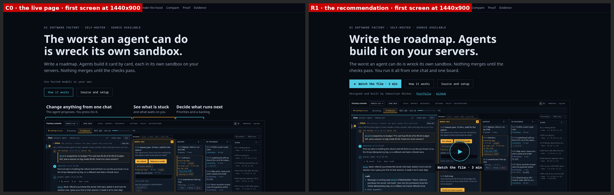
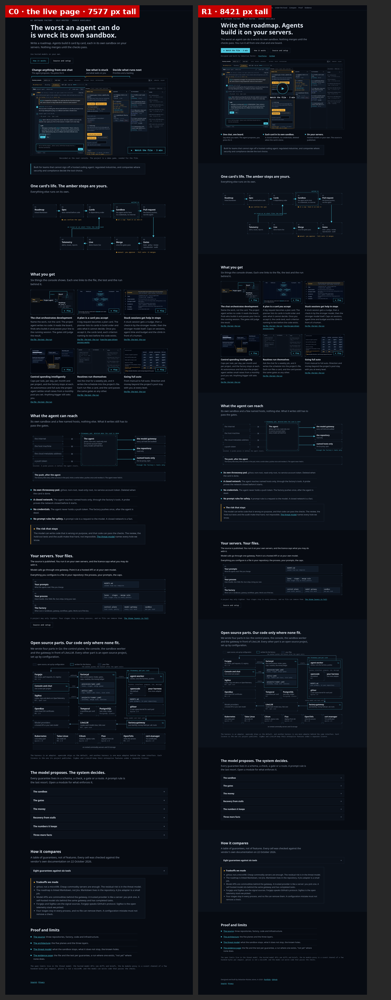
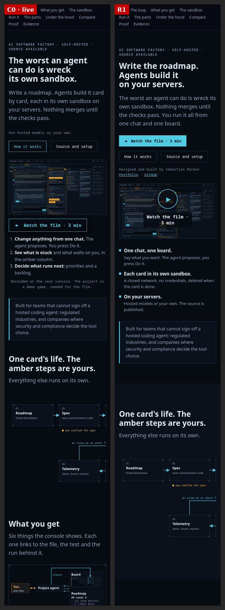
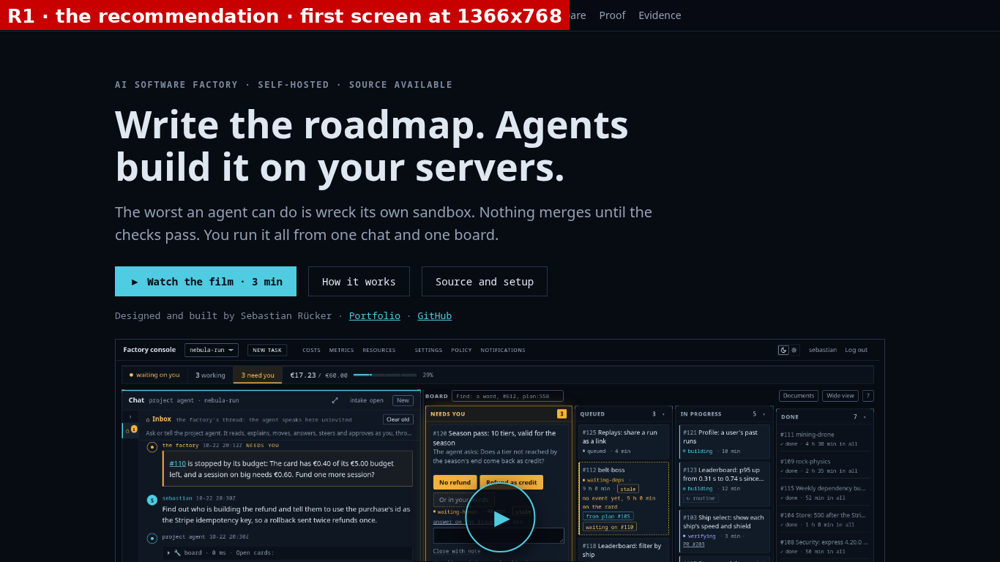
For the line, A07: "Coding agents for teams whose code must stay in house." For the arrangement, B4: the three points above the frame, which both critics called the clearest statement of the product and which pushes the play ring under the fold at 1440x900. R1 keeps B4's points and moves them under the frame.
| Question | Gemini | GLM |
|---|---|---|
| The line, for the hiring reader (1 to 5) | 2 | 2 |
| The line, for the CTO | 5 | 4 |
| Elements competing in the first screen | 9 | 11 |
| Whitespace between sections (1 to 5) | 2 | 3 |
| The film control found (1 to 5) | 1 | 2 |
| Author named anywhere | no | no |
Scores for the hiring reader over four readings (two critics, two loops), highest first: A11 17, A01 16, A07 16, A02 15, A06 15, A03 14, A05 13, A10 13, A00 12, A04 12, A08 12, A09 11. A11 wraps to four lines on the phone. The full table with all three readers is in the notes.
| Candidate | What it is | Gemini loop 1 | Gemini loop 2 | GLM loop 2 | Play ring top, px |
|---|---|---|---|---|---|
| B1 | film button first, play ring, callouts under the frame | 1st | 3rd | 1st | 658 |
| B2 | copy left, frame right | 5th | 5th | 3rd | 286 |
| B3 | the live callouts kept, button and ring added | 4th | 4th | 5th | 701 |
| B4 | three product points above the frame | 2nd | 1st | 4th | 765 |
| B5 | B1 plus a byline | 3rd | 2nd | 2nd | 677 |
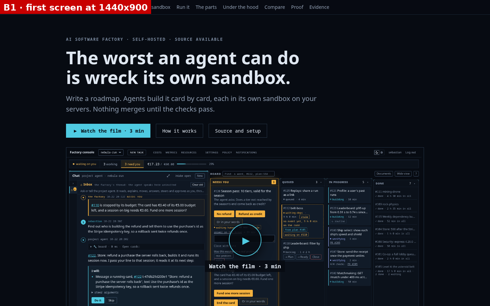
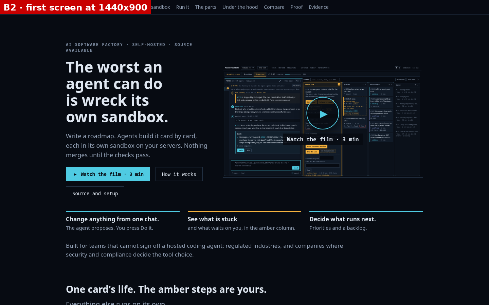
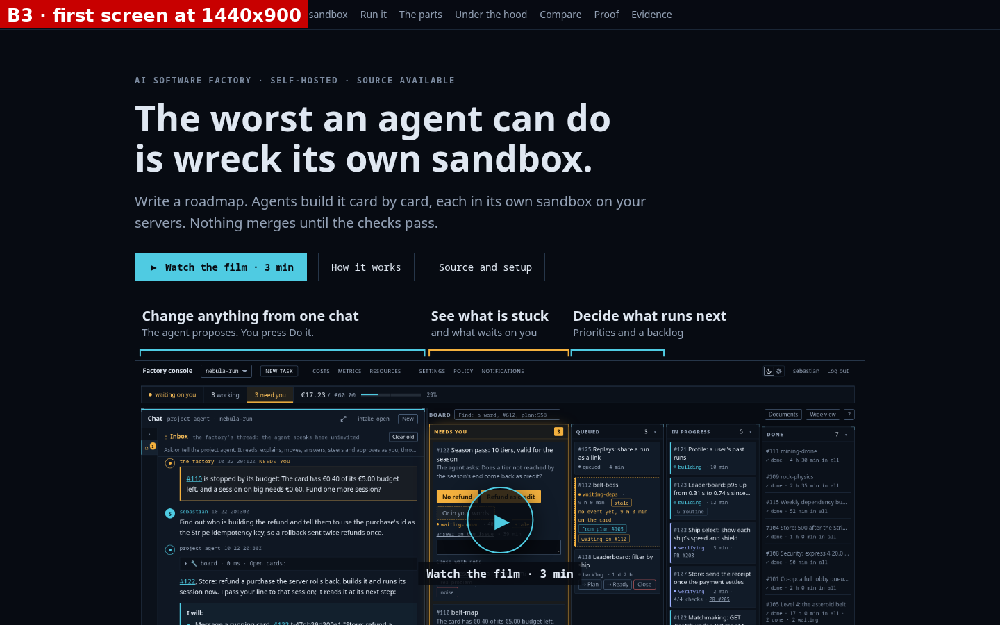
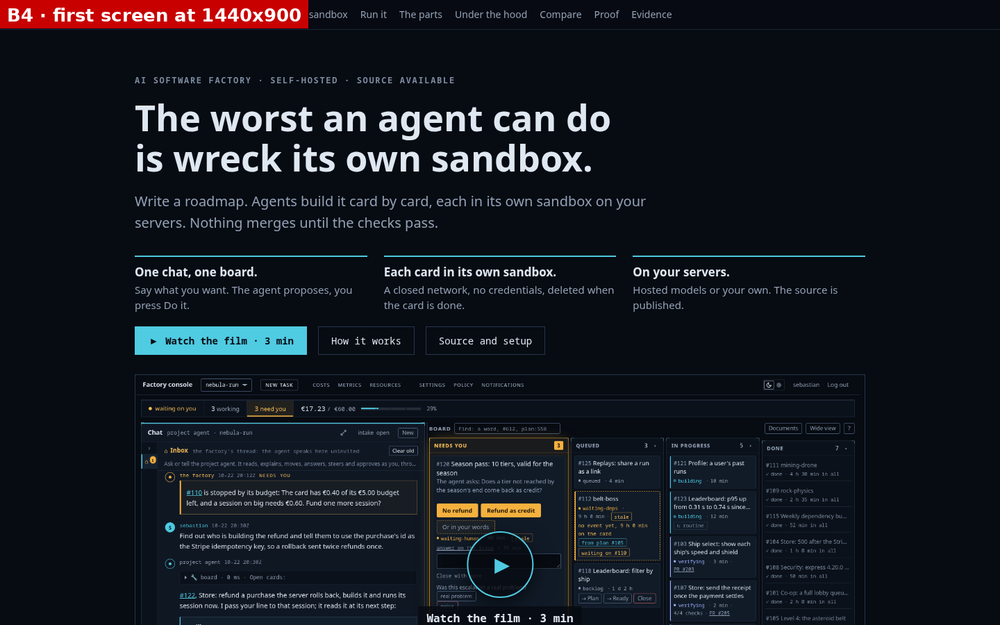
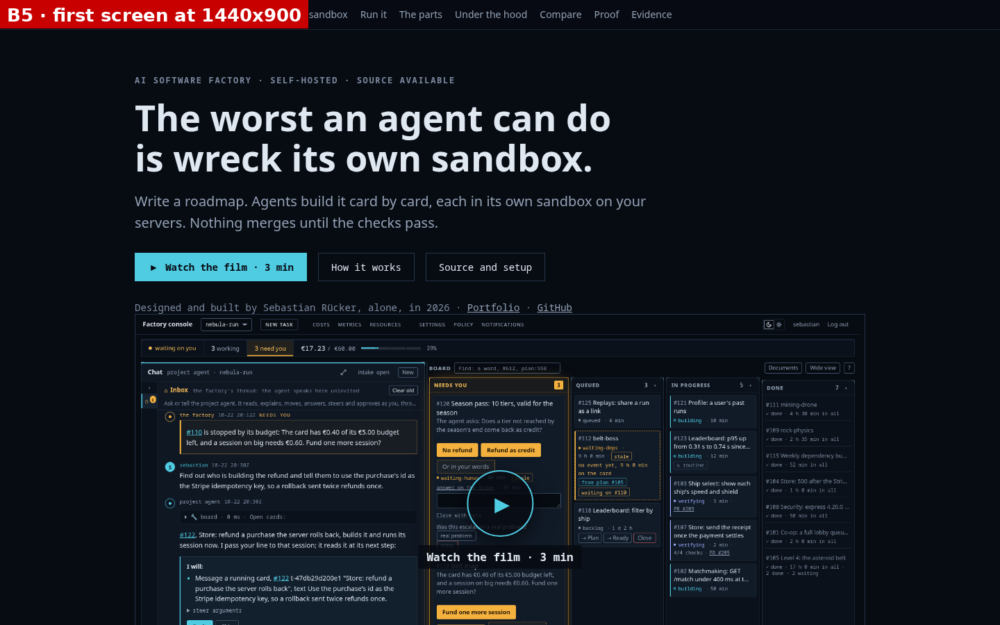
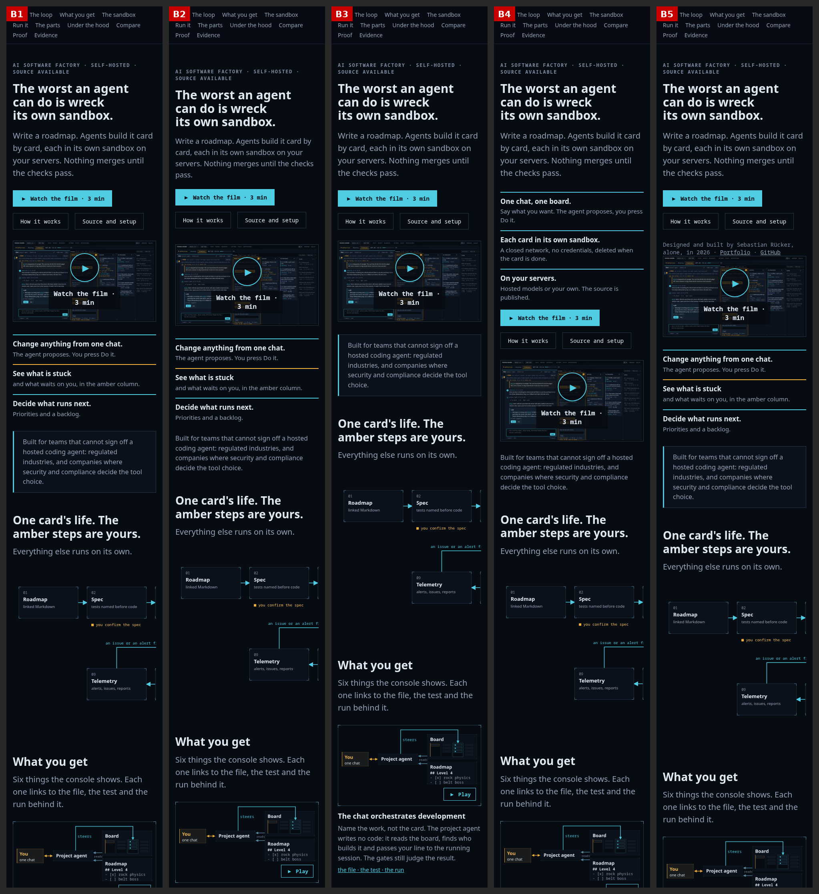
Both critics put C3 first (5 of 5 on legible boundaries and on reading as stops), the live page last (1 of 5 on both). C1 adds space, C2 space and a hairline, C3 space and alternating panels. Pages: C1, C2, C3.
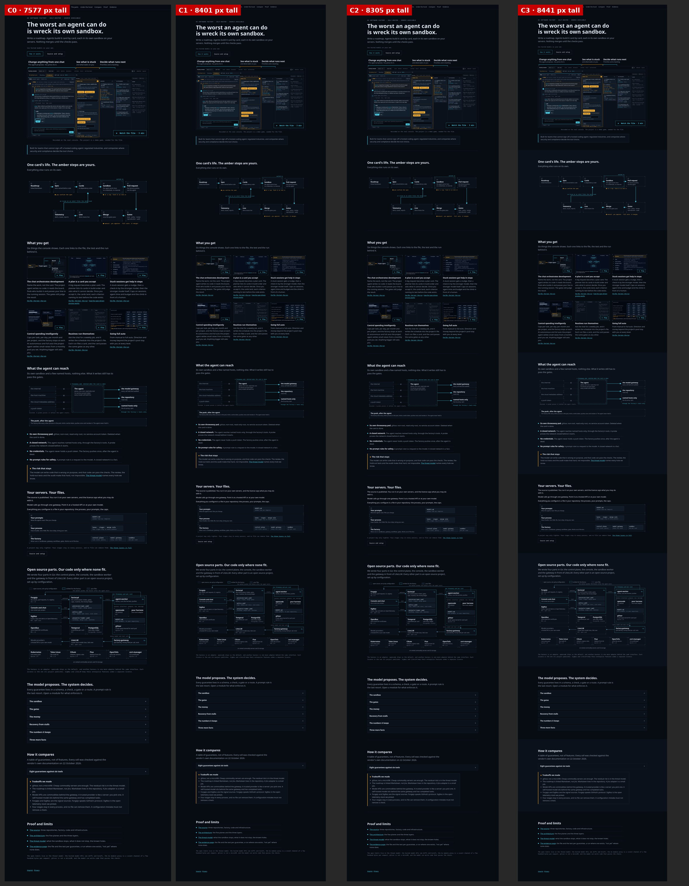
Three pages on B1 and C3 with the sandbox line as the sandbox section's title. Gemini ranked F3, F1, F2 and GLM F1, F3, F2. Both said the hero loses the CTO's trust signal without the sandbox line, so R1 keeps it under the new line. Pages: F1 (A01), F2 (A10), F3 (A06).
Fourteen critic calls, no image generation, $0.42 by the tool's estimate. The first loop's phone shots came from a 500 px layout, because headless Chrome floors its window at 500 px wide. The loop ran again with Playwright at a true 390 px. Details in the notes.